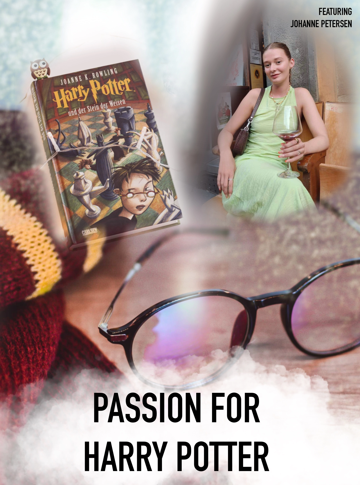
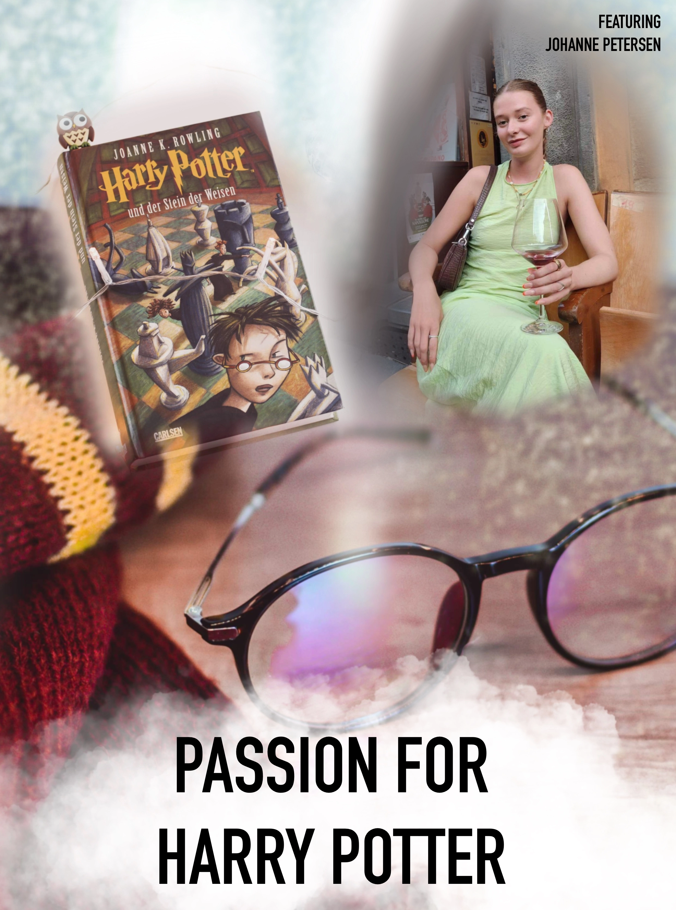

Velkommen til "Passion for Harry Potter"
I denne video vil du blive introduceret til Johanne, som er vokset op med Harry Potter og se hvilken betydning det har haft på hendes barndom.
I denne video vil du blive introduceret til Johanne, som er vokset op med Harry Potter og se hvilken betydning det har haft på hendes barndom.
